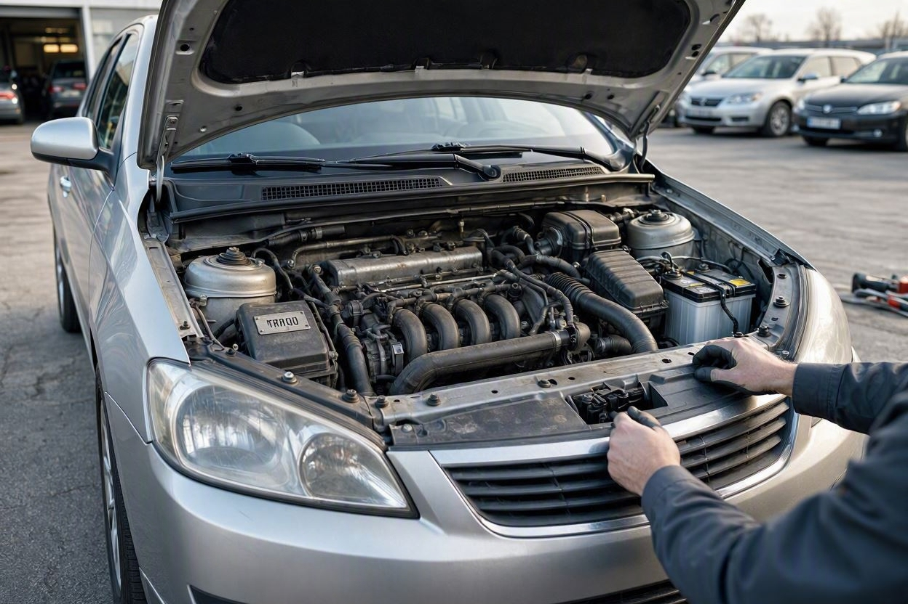
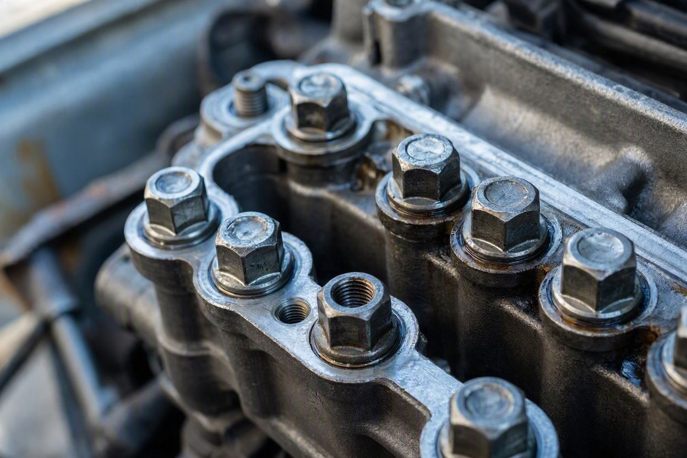
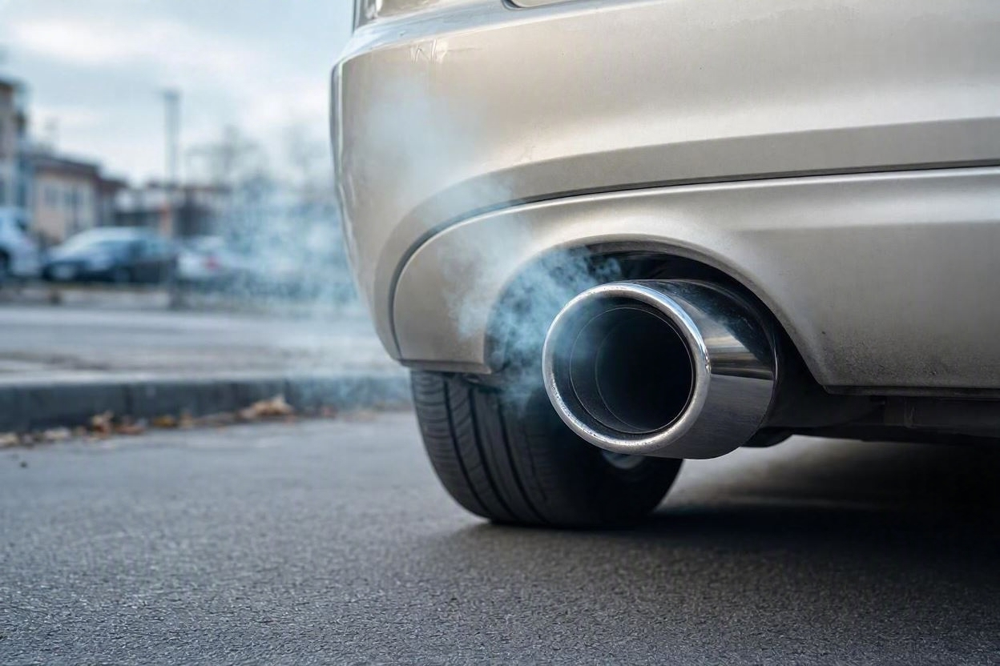
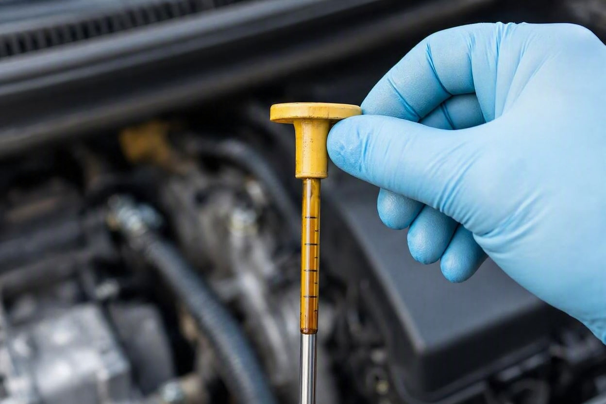

از کجا بفهمیم موتور ماشین باز یا تعمیر شده است؟ نشانههای پیش از خرید
فرض کنید یک خودروی دستدوم را میپسندید و فروشنده میگوید موتورش دستنخورده و سالم است. اما چند پیچ خطافتاده یا یک واشر نو، ماجرای دیگری تعریف میکنند. باز شدن موتور همیشه یک ایراد بزرگ نیست، ولی نوع و دلیل آن میتواند روی قیمت و آینده خودرو اثر جدی بگذارد.
برای تشخیص باز یا تعمیر شدن موتور، سراغ چند نشانه بروید: پیچهای خطافتاده و لبهپریده روی سرسیلندر و کارتل، واشرهای نو یا رنگورو رفته، ماده آببندی تازه دور درزها، رنگ و بوی روغن، دود اگزوز و صدای غیرعادی موتور در حرکت. این نشانهها بهتنهایی قطعی نیستند و تشخیص دقیق نیازمند بررسی تخصصی و گاهی تست فشار و دیاگ است.
خلاصه در یک دقیقه
- پیچهای خطافتاده روی سرسیلندر و کارتل، مهمترین نشانه ظاهری باز شدن موتور هستند.
- واشر نو یا ماده آببندی تازه دور درزها یعنی موتور اخیراً باز شده است.
- دود آبی نشانه سوختن روغن و دود سفید غلیظ نشانه ورود آب به محفظه احتراق است.
- صدای تقتق یا لرزش نامنظم موتور را در حالت گرم و در حرکت بررسی کنید.
- باز شدن موتور همیشه منفی نیست؛ مهم دلیل، کیفیت تعمیر و اثر آن بر قیمت است.
منظور از موتور باز یا تعمیر شده چیست؟
موتور باز شده یعنی در گذشته بخشی از موتور برای تعمیر یا بازدید باز شده است. این کار میتواند از یک تعویض ساده واشر سرسیلندر تا تعمیر اساسی و تعویض پیستون و رینگ را شامل شود. تعمیر موتور همیشه بهمعنای خودروی معیوب نیست، اما یک موتور تعمیری با موتور دستنخورده از نظر ارزش و ریسک فرق دارد.
پیش از تصمیمگیری، خوب است بدانید مجموعههایی مثل کارماچک موتور را در کنار گیربکس و بدنه بررسی میکنند، چون سابقه تعمیر موتور مستقیم روی قیمت و اطمینان معامله اثر میگذارد.
نکته مهم اینجاست که تفاوت میان یک تعمیر تمیز و اصولی با یک تعمیر بیکیفیت، همان چیزی است که ارزش واقعی خودرو را تعیین میکند. برای همین صرف باز شدن موتور نباید علت رد یا قبول فوری معامله باشد.
نشانههای ظاهری باز شدن موتور
بیشتر نشانههای اولیه را میتوان با یک بررسی دقیق چشمی پیدا کرد. کافی است بدانید کجا را نگاه کنید.

- پیچهای سرسیلندر و کارتل که سرشان خطافتاده یا رنگشان با بقیه فرق دارد.
- واشر سرسیلندر نو در حالی که موتور کارکرد بالایی دارد.
- ماده آببندی تازه و اضافی که دور درزها زده شده است.
- تمیزی نامتعارف یک بخش موتور نسبت به قسمتهای دیگر.
- رنگپریدگی یا آثار باز و بسته شدن روی قطعات اطراف سرسیلندر.
نشانهها هنگام روشن بودن موتور
بعضی مشکلات فقط با موتور روشن و در حرکت خودشان را نشان میدهند. دود اگزوز یکی از گویاترین نشانههاست.

- دود آبی یعنی روغن وارد محفظه احتراق میشود؛ نشانه سایش رینگ یا گایت سوپاپ.
- دود سفید غلیظ و پایدار یعنی احتمال ورود آب رادیاتور به موتور.
- صدای تقتق منظم که با دور موتور تغییر میکند، نشانه مشکل داخلی است.
- لرزش نامنظم در حالت درجا که با گرم شدن هم کامل برطرف نمیشود.
بررسی روغن و مایعات
روغن موتور و آب رادیاتور دو منبع اطلاعاتی مهم درباره سلامت موتور هستند.

- روغن شیریرنگ یا کفآلود زیر درپوش روغن، نشانه احتمال ورود آب به موتور.
- آب رادیاتور چرب یا لکه روغن روی سطح آن، همان هشدار را از سمت دیگر میدهد.
- سطح روغن بیشازحد بالا که میتواند نشانه مخلوط شدن با سوخت یا آب باشد.
این نشانهها بهتنهایی برای تشخیص قطعی کافی نیستند، اما وقتی کنار پیچهای خطافتاده و دود اگزوز قرار بگیرند، تصویر روشنتری از سابقه موتور میدهند. برای تشخیص دقیقتر، بررسی کامل خودرو پیش از خرید کمک زیادی میکند.
جدول نشانهها و معنی آنها
| نشانه | معنی احتمالی | اهمیت |
|---|---|---|
| پیچ سرسیلندر خطافتاده | باز شدن قبلی موتور | مهم |
| واشر نو با کارکرد بالا | تعویض واشر یا تعمیر اخیر | مهم |
| دود آبی اگزوز | سوختن روغن، سایش داخلی | جدی |
| دود سفید غلیظ | ورود آب به احتراق | بسیار جدی |
| روغن شیریرنگ | مخلوط شدن آب و روغن | بسیار جدی |
| صدای تقتق موتور | مشکل داخلی موتور | جدی |
پیش از معامله، موتور را دقیق بررسی کنید
تعمیر اساسی موتور معمولاً پرهزینه است. یک بررسی تخصصی میتواند سابقه و وضعیت واقعی موتور را روشن کند و ابهام معامله را کمتر کند.
شروع کارشناسی خودروبررسی عملی مرحلهبهمرحله
این مسیر ساده کمک میکند بدون ابزار تخصصی، وضعیت اولیه موتور را بسنجید:
- مرحله اول:در حالت خاموش، درپوش موتور را باز کنید و به پیچها، واشرها و آثار آببندی تازه دقت کنید.
- مرحله دوم:روغن و آب رادیاتور را از نظر رنگ و مخلوط شدن بررسی کنید.
- مرحله سوم:موتور را روشن کنید و به صدای درجا و لرزش آن گوش دهید.
- مرحله چهارم:هنگام گاز دادن و در حرکت، به رنگ دود اگزوز و تغییر صدا توجه کنید.
- مرحله پنجم:نتیجه این نشانهها را کنار هم بگذارید و در صورت شک، به کارشناس بسپارید.
کارماچک فقط ایراد موتور را شناسایی نمیکند؛ اثر آن روی هزینه تعمیر و ارزش واقعی معامله را هم مشخص میکند. برای همین نتیجه بررسی موتور در کنار وضعیت بدنه و گیربکس معنای درست پیدا میکند.
چه زمانی حتماً سراغ کارشناس بروید؟
بعضی نشانهها را نباید نادیده گرفت. اگر دود آبی یا سفید پایدار، روغن شیریرنگ یا صدای تقتق دیدید، بررسی تخصصی ضروری است. همچنین اگر موتور تعویض شده یا سابقه تعمیر اساسی دارد، بدون تأیید کارشناس تصمیم نگیرید.
اگر موضوع قیمت برایتان مهم است، میتوانید تأثیر سابقه تعمیر موتور بر ارزش و قیمت خودرو را هم بسنجید تا در چانهزنی واقعبینانه عمل کنید.
جمعبندی
باز یا تعمیر شدن موتور بهتنهایی دلیل رد معامله نیست، اما پنهان ماندن آن میتواند به ضرر خریدار تمام شود. نشانههای ظاهری مثل پیچ خطافتاده و واشر نو، همراه با دود اگزوز، صدا و وضعیت روغن، مهمترین سرنخها برای تشخیص اولیه هستند. با این حال هیچکدام بهتنهایی قطعی نیستند و تشخیص دقیق نیازمند بررسی تخصصی است. تصمیم درست وقتی گرفته میشود که این نشانهها کنار کارشناسی کامل دیده شوند.
مطمئنتر معامله کنید
اگر میخواهید پیش از خرید از سابقه و سلامت موتور خودرو مطمئن شوید، میتوانید رزرو کارشناسی را ثبت کنید تا بررسی موتور و فنی با هم انجام شود.
ثبت درخواست کارشناسیسؤالات متداول
آیا باز شدن موتور همیشه یک ایراد بزرگ است؟
نه لزوماً. گاهی موتور برای یک تعمیر ساده مثل تعویض واشر باز میشود که با کیفیت خوب انجام شده و مشکلی ایجاد نمیکند. اما تعمیر اساسی یا تعمیر بیکیفیت میتواند ریسک و افت قیمت به همراه داشته باشد. مهم دلیل، کیفیت تعمیر و اثر آن بر ارزش خودرو است.
خطافتادگی پیچ سرسیلندر یعنی چه؟
وقتی سر پیچهای سرسیلندر خطافتاده یا لبهپریده باشد، یعنی این پیچها قبلاً باز و بسته شدهاند. این خودش نشان میدهد موتور در گذشته باز شده است. البته برای فهمیدن دلیل و کیفیت تعمیر، باید بررسی تخصصیتری انجام شود.
رنگ دود اگزوز چه چیزی را نشان میدهد؟
دود آبی معمولاً یعنی روغن در حال سوختن است و به سایش داخلی موتور اشاره دارد. دود سفید غلیظ و پایدار میتواند نشانه ورود آب رادیاتور به محفظه احتراق باشد. دود سیاه هم اغلب به مشکل سیستم سوخترسانی مربوط است. رنگ دود سرنخ مهمی است اما تشخیص قطعی نیاز به بررسی دارد.
روغن شیریرنگ نشانه چیست؟
روغن شیریرنگ یا کفآلود معمولاً یعنی آب و روغن با هم مخلوط شدهاند. این میتواند نشانه واشر سرسیلندر سوخته یا ترک در موتور باشد که از مشکلات جدی و پرهزینه است. اگر چنین چیزی دیدید، پیش از خرید حتماً موضوع را با کارشناس بررسی کنید.
آیا با نگاه ساده میتوان تعمیر موتور را قطعی تشخیص داد؟
خیر. بررسی چشمی فقط نشانهها را پیدا میکند، اما تشخیص قطعی وضعیت داخلی موتور به تست تخصصی مثل تست فشار سیلندر، دیاگ و بررسی کارشناس نیاز دارد. برای یک تصمیم مطمئن، بهتر است نشانههای ظاهری را کنار کارشناسی کامل بگذارید.